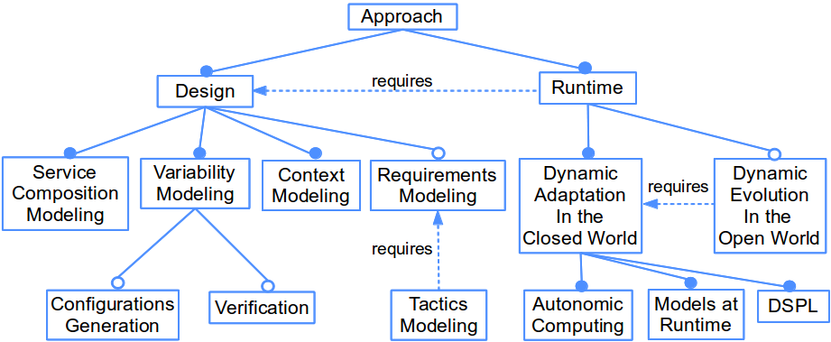
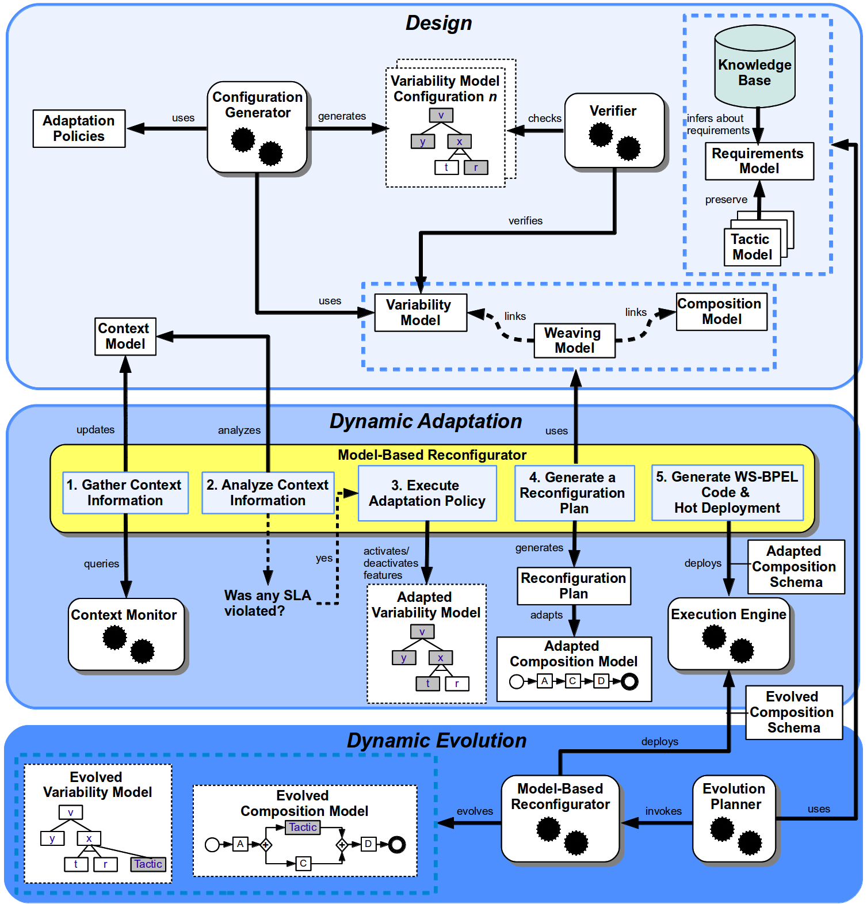

Introduction - Main Building Blocks - A Framework for Autonomic Service Compositions

Introduction
In order to achieve autonomic behavior for service compositions, we argue that the models that are produced as artifacts from Model-driven Engineering (MDE) methodologies can be leveraged during execution to drive autonomic behavior. In MDE, a model is an abstraction or reduced representation of a system that is built for specific purposes (e.g. to abstract the underlying computing infrastructure). We share this view of what constitutes a model and explore the use of models at runtime to drive the autonomic behavior of service compositions.
Our decision to use models at runtime to achieve autonomic service compositions originated from two reasons. First, if models reflect the service composition and its operational context, then they can provide up-to-date and exact information to drive subsequent adaptation decisions. Secondly, if models are causally connected, then adaptations can be made first at the modeling level rather than at the service composition level.
This thesis provides a model-driven framework to guide the dynamic adjustment of context-aware autonomic service compositions. At design time, we propose the creation of models that guide autonomic changes. Service operations are expressed as Software Product Line (SPL) features in a variability model to guide dynamic adaptations. In order to reach optimum reconfigurations at runtime, the variability model and its possible configurations are verified at design time.
At runtime, in order to face problematic context events, the variability model is leveraged for decision-making. The activation and deactivation of features in the variability model result in changes in a composition model, which abstracts the service composition. Changes in the composition model are reflected into the service composition by adding or removing fragments of Web Services Business Process Execution Language (WS-BPEL) code, which are deployed at runtime. Our framework also covers the dynamic evolution of service compositions to deal with unknown context events in the open world. When facing uncertainty, the supporting models self-evolve according to abstract tactics that preserve requirements.
In this Web page, our approach is introduced from two related points of view. First, we introduce our approach in terms of building blocks from a conceptual point of view. Then, we describe our framework for autonomic service compositions from an architectural point of view.

Main Building Blocks
Figure 1 presents the main building blocks of the proposed approach from a conceptual point of view. Each block is denoted by a feature. Our approach is divided into two main building blocks: Design Block and Runtime Block. At the Design Block, we propose the creation of a set of models that are used to support dynamic adjustments of the service composition. At the Runtime Block, the models created at design time are queried in response to context events to reconfigure the service composition. The building blocks of our approach are described in the following subsections.

Figure 1. Main building blocks of the approach from a conceptual point of view.
Design-Related Building Blocks
The following blocks support the creation of abstractions at design time to guide autonomic service compositions during execution:
- Service Composition Modeling: In our approach, dynamic adjustments are carried out first at the modeling level and then injected into the running service composition. Therefore, it is necessary to count on an abstraction of the underlying service composition. This model has to be causally connected to the service composition in order to reflect the changes in this model into running service operations.
- Variability Modeling: Variability models are used to describe the variants in which the service composition can self-adapt. We argue that in response to changes in the context, the system itself can query a variability model to determine the necessary modifications in the service composition. Feature modeling was chosen for variability modeling because it has good tool support for variability reasoning.
There are two optional subblocks related to variability modeling: 1) Configurations Generation: The configuration of a service-based system is the set of all active features in its variability model at a particular moment. At runtime, the system queries the adaptation space (with all the possible configurations of the variability model) in order to adapt from one configuration to another. Although it is possible to define the adaptation space manually, it can become a cumbersome operation in large systems. Therefore, we propose a tool to automatize the generation of variability model configurations; and 2) Verification: Even though it is possible to use unverified variability models at runtime to guide dynamic adaptations, it is a very error-prone task. We argue that a best practice for Self-Adaptive Software (SAS) is to ensure that new system configurations are not invalid in a given situation. Therefore, we propose to verify the variability model and its possible configurations prior execution to ensure safe service recompositions.
– Context Modeling: In order to carry out dynamic adjustments in the service composition to face arising context events, first it is necessary to count on an abstraction of the context. This abstraction can be used at runtime to reason about the current situation of the context. We propose an ontology-based context model that leverages Semantic Web technology. In addition, we define context conditions as queries to the context model. The fulfillment of these context conditions triggers the reconfiguration of the service composition.
– Requirements Modeling: According to the Institute of Electrical and Electronics Engineers (IEEE), requirement can be defined as: “1) a condition or capability needed by a user to solve a problem or achieve an objective. 2) A condition or capability that must be met or possessed by a system or system component to satisfy a contract, standard, specification, or other formally imposed documents. 3) A documented representation of a condition or capability as in 1 or 2” (IEEE, 1990). A requirements model describes the requirements that the service composition must preserve at runtime. These requirements have to be fulfilled despite arising unknown context events. In this work, we are particularly interested in keeping non-functional requirements (NFR) at runtime (e.g. performance and availability). Since requirements modeling is used during dynamic evolutions (in the open world), it is considered as an optional block.
– Tactics Modeling: In our approach, tactics are considered as last surviving resorts to be used when the service composition does not have predefined adaptation actions to deal with arising problematic context events in the open world. Writing complex scripts to specify tactics can be cumbersome. Therefore, we propose the creation of highly-abstract tactic models that can be used to express the tactical functionality to be triggered on the underlying service composition to preserve affected requirements (one requirement can be preserved by many tactics). There is a requires relationship between the Tactics Modeling Block and the Requirements Modeling Block because tactics exist to preserve requirements.
Runtime-Related Building Blocks
The following blocks support autonomic service compositions during execution:
Dynamic Adaptation in the Closed World: This block is focused on the closed-world assumption, in which all context events are foreseen at design time. Predefined actions (in terms of the activation or deactivation of features in the variability model) guide adaptations in the service composition according to known (or foreseen at design time) context events. The following subblocks are the underpinnings for the dynamic adaptation of service compositions:
– Autonomic Computing: Autonomic Computing (AC) has evolved as a discipline that covers the broad spectrum of computing in domains as diverse as mobile devices (White et al., 2007) and home-automation (Cetina et al., 2009; Morin et al., 2009b), thereby demonstrating its feasibility and value by automating tasks such as installation (Bhola et al., 2006), healing (Zenmyo et al., 2006), and updating (Fenson and Howard, 2004). In order to support the dynamic adaptation of service composition through AC, we propose a computing infrastructure that implements the components of IBM's MAPE-K loop (Horn, 2001).
– Models at Runtime: In our approach, the set of models that are created under the Design Building Block are used at runtime to automatically determine how the service composition should be adjusted.
– DSPL: Dynamic Software Product Line Engineering (DSPLE) goes a step further from SPL with the investigation of development issues for reusable and dynamically reconfigurable core assets. When features are activated or deactivated at runtime due to changes in the context, a DSPL architecture supports the dynamic service recomposition.
Dynamic Evolution in the Open World: Predefined adaptation actions for known context events in the closed world are not enough in the open world where several unknown context events can arise (e.g. sudden security attacks). Despite the recognized need for handling unexpected events in SAS (Calinescu et al., 2012; Cheng et al., 2009a), the dynamic evolution in the open world of service compositions is still an open and challenging research topic. In the open world, our approach tries to reduce the impact of unknown context events on expected requirements (described in a requirements model) with a group of tactics (described in tactic models). The Dynamic Evolution in the Open World Block can be considered as an extension of the Dynamic Adaptation in the Closed World Block. Therefore, the former requires (depends on) the latter at runtime.

A Framework for Autonomic Service Compositions
We propose the following strategy to offer a solution for the dynamic adjustment of service compositions. First, the service composition is modeled at design time. Then, we introduce mechanisms to express where and how service compositions can be adapted or evolved to face arising context events. These mechanisms are expressed as easy-to-understand and as highly-abstract as possible. At runtime, we provide an infrastructure that detects changes in the context and enables dynamic adjustments.
In order to make this strategy a reality, we propose a framework that states the models, tools, and artifacts to support dynamic adjustment of service compositions from design time to runtime. This framework is depicted from an architectural point of view in Figure 2. This framework consists of three phases: Design, Dynamic Adaptation, and Dynamic Evolution.

Figure 2. A framework for the dynamic adjustment of service compositions.
According to the main conceptual building blocks: 1) the Design Phase implements the Design Block; 2) the Dynamic Adaptation Phase implements the Dynamic Adaptation in the Closed World Block; and 3) the Dynamic Evolution Phase implements the Dynamic Evolution in the Open World Block. These phases are described in the following subsections.
Design Phase
In order to support dynamic adaptations in our framework, it is necessary to count on abstractions that represent the context, the dynamic configurations of the service composition, and the service composition itself. Also, it is necessary to create the adaptation policies that move the service composition to new configurations.
Specifically, the Design Phase covers the creation of the following models (see the top of Figure 2). A composition model describes the service composition. A variability model describes the dynamic configurations of the service composition in terms of activation or deactivation of features. Thus, the knowledge that is captured by this model is the basis for adaptation policies. Since the initial composition model may lack support for variability, we propose to extend this model with variation points where variants can be injected at runtime. The variability-related information to carry out this extension is based on the variability model. We also propose the creation of two additional supporting models. First, a context model formalizes collected context knowledge. Second, since changes in the variability model guide adaptations in the service composition, which is abstracted in the composition model, we propose a weaving model to connect these two models.
Two tools provide variability reasoning at design time: 1) the Configuration Generator uses the variability model and the set of adaptation policies to automatically generate the adaptation space with all the possible configurations of the variability model; and 2) the Verifier uses Constraint Programming (CP) to verify the variability model and check that the generated configurations respect the constraints imposed by the variability model. Verifification of the variability model entails finding undesirable properties, such as contradictory information or the impossibility to offer a valid configuration for a particular context. If there are errors in the variability model, they will inevitably spread to an undefined number of configurations, which can drastically diminish the quality and outcome of the entire adaptation.
The dynamic adaptation of context-aware service compositions is possible by adjusting models at runtime through predefined adaptation actions. This approach can work fine under the closed-world assumption. However, predefined adaptation actions are not enough in the open world where several unforeseen context events can arise. These unknown events create uncertainty in the way the system should face them. Therefore, we propose to manage problematic unknown context events through the dynamic evolution of the service composition.
The corrective actions to deal with uncertainty are expressed as abstract tactic models. Tactics are last resort surviving actions or strategies to preserve the requirements that can be negatively impacted by unknown context events. Therefore, tactics trigger the dynamic evolution of the service composition to preserve requirements at runtime. Requirements are represented in an abstract way in a requirements model. At runtime, an AI mechanism looks for the requirements that can be affected by an unknown context event. Therefore, it is also necessary to define in this phase a set of rule premises to evaluate arising context facts against them at runtime. These rules are kept in a knowledge base.
Dynamic Adaptation Phase
In the Dynamic Adaptation Phase, the models and adaptation policies that are created in the Design Phase are used to guide the self-adaptation of the service composition (see the middle of Figure 2). This phase is framed in the closed-world assumption, in which possible context events, and the necessary adaptations for those events, are fully known at design time.
The proposed infrastructure carries out the following steps to support dynamic adaptations. First, the Model-Based Reconfigurator queries the context information that is collected by the Context Monitor and updates the context model accordingly. Then, the Model-Based Reconfigurator determines if any SLA has been violated in the context according to the information in the context model. If any SLA has been violated, the Model-Based Reconfigurator executes an adaptation policy that indicates the activation or deactivation of features in the variability model (i.e., to move to a new configuration). Then, the set of active features in the new configuration of the variability model is used to generate a reconfiguration plan, which is used to modify the elements in the composition model accordingly. Modifications in the composition model are reflected into the service composition by adding or removing fragments of WS-BPEL code from a WS-BPEL template. The adapted composition schema is hot deployed on the Execution Engine. In turn, the Execution Engine uses the adapted WS-BPEL composition schema to orchestrate the service composition.
Dynamic Evolution Phase
In the Dynamic Evolution Phase, the knowledge in models is used to guide the dynamic evolution of the service composition (see the bottom of Figure 2). Therefore, this phase is focused on the open world. To this end, the Evolution Planner queries the information that is collected by the Context Monitor to find out if a requirement in the requirements model can be negatively impacted by an unknown context event. To this end, the Evolution Planner uses the set of inference rules in the knowledge base to realize the requirements that can be affected. Since we are interested in managing uncertainty that arises from the context in which the service composition is deployed, our approach is related to external uncertainty (Esfahani et al., 2011). In order to preserve affected requirements, the Evolution Planner chooses surviving tactics. According to the chosen tactics, the Model-Based Reconfigurator evolves the variability and composition models by means of tactic models. Finally, the Model-Based Reconfigurator uses these evolved models to evolve the WS-BPEL composition schema, which in turn is hot deployed on the Execution Engine.